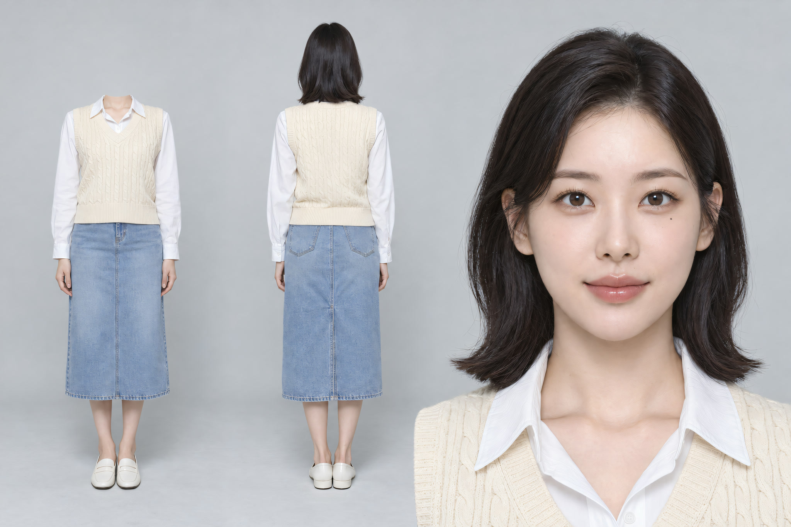
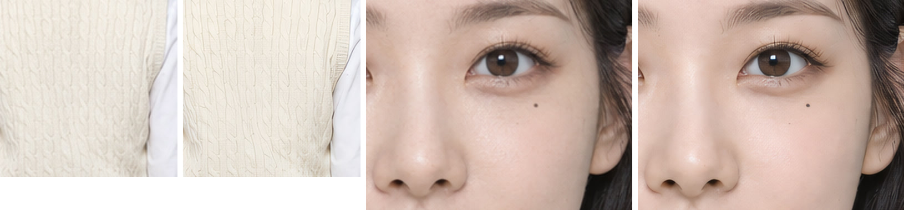

우양산 광고 인물 앵커 v1
GPT 구독(ChatGPT)으로 3면도 한 장 → 로컬 4x-UltraSharp 업스케일 2048×1365 · 크레딧 0

- 룩: 스튜디오(광고용) · 20대 중반 · 레이어드 단발 · 왼쪽 눈 밑 작은 점(실존 인물 닮음 방지)
- 옷: 흰 셔츠 + 크림 꽈배기 니트 조끼 + 연청 미디 스커트 + 흰 로퍼
- 칸: 머리 없는 정면 전신 · 뒷모습 전신 · 정면 얼굴(눈높이·왜곡 없음)
업스케일 확인(원본 → 2K)

왼쪽 둘 니트 원본→2K · 오른쪽 둘 눈 원본→2K. 바둑판 뭉개짐 없음 · 니트 무늬 윤곽이 조금 진해짐 · 피부가 살짝 매끈해짐